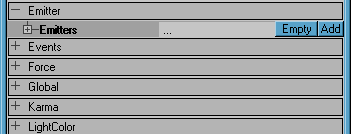
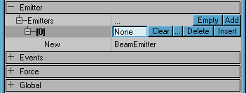
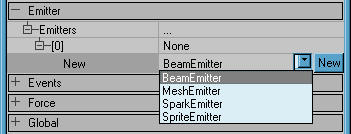

Add An Inline Object
This is a Basic Procedure tutorial page. It explains how to perform a single procedure which is required in many different contexts.
An inline object is a new concept in UnrealEd 3. The notion of setting one actor's property to point to another actor in the map is not new, but with an inline object, that second object's properties can be edited within the first's. It's an object that is created just to work within this actor: you can think of the inline object as a complex group of properties or component inserted into the actor.

|
When dealing with dynamic arrays, like the Emitters array of the Emitter class, extend the dynamic array to make room for a new inline object first.

|
This is how you usually start out. You have an object reference that doesn't hold anything: the box says 'None'.
You could:
- type in a reference for an existing object, or
- use the widgets to create a new object.
Reusing an existing object might be useful with the Emitter, as you could have one ParticleEmitter working in several Emitters (probably... we haven't tested this!)

|
To use the New widget, first highlight the row that contains the "New" label. This will reveal a drop-down list of classes. Pick one and click the New button. (Note: in some older builds of UnrealEd 3, the drop-down list is broken and won't display. Make it active and use the arrow keys to select from the list.)
![[interface-Ed3-dynamicarray-inline-4]](images/interface-ed3-dynamicarray-3.png) The object reference now holds an object. Note the darker grey background for the inline object and its property groups. |
Your actor whose properties are displayed in the Actor Properties Window now contains a new object inside it. It has its own properties within the properties of the containing actor: the inner object properties are shown in a darker grey that the containing actor properties.
Note that the inner object won't appear in the map views and can't be selected and edited like an actor. To work with it, you'll always need to select the containing actor first.
Discussion
Tarquin: I have a better set of pics from Karma → KParams , will upload later.